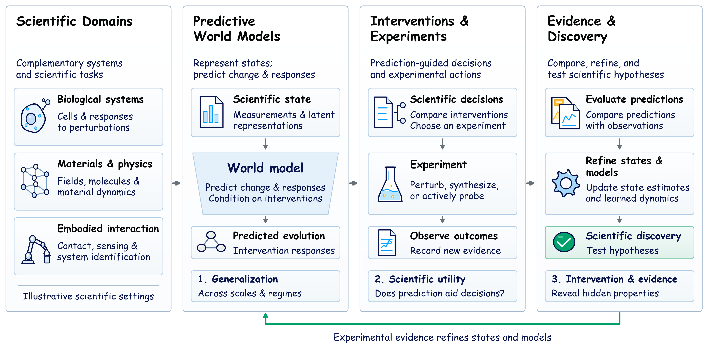

(1) Representing scientific states and dynamics
Multimodal and partially observed systems; particle, cell, mesh, and field representations; neural operators, learned simulators, and latent dynamics; temporal abstraction and long-horizon prediction.
Scientific discovery depends on models that explain how systems change and predict what observations or actions will reveal next. Forecasting a physical field, simulating molecular motion, predicting a cellular perturbation, and identifying an object through robotic contact all require representations of the variables governing change.
Scientific World Models brings together representation learning, scientific machine learning, and embodied intelligence. A scientific world model represents the state of a scientific system and predicts how it evolves over time or responds to interventions, enabling simulation, planning, or experiment selection. Our scope spans physical fields, molecular and materials dynamics, biological responses, and embodied system identification.
How can learned world models turn predictive representations into informative interventions and scientific discovery?
Invited talks, contributed presentations, posters, and a panel will connect modeling principles across disciplines. We will examine the representations needed for generalization, when prediction improves a scientific decision, and how physical interaction reveals hidden properties or distinguishes competing models.

Our topics include, but are not limited to:
Multimodal and partially observed systems; particle, cell, mesh, and field representations; neural operators, learned simulators, and latent dynamics; temporal abstraction and long-horizon prediction.
Symmetry, geometry, conservation laws, and hybrid mechanistic models; coupling microscopic and macroscopic behavior; generalization across regimes; uncertainty propagation and computational efficiency.
Causal representations, counterfactual prediction, experimental design, and planning under uncertainty; scientific agents and autonomous laboratories; models of instruments, process conditions, and experimental outcomes.
Visual, tactile, force, and proprioceptive sensing; contact and manipulation dynamics; active system identification; transfer across objects, tools, and embodiments; evaluation using physical experiments.
Across these themes, we welcome work connecting predictive fidelity, physical consistency, and calibration to scientific utility—including unfamiliar regimes, simulation-to-reality transfer, reproducible datasets, and interfaces between models and experiments.
Research and short papers on scientific world models
The planned call for Scientific World Models: From Prediction to Intervention and Discovery welcomes architectures, algorithms, theory, empirical studies, benchmarks, and applications spanning forecasting, simulation, scientific inference, system identification, and autonomous experimentation. We especially welcome ongoing and novel work, reproducibility studies, and analyses of model failures.
Submission portal: The workshop OpenReview link and final submission instructions will be announced following the workshop acceptance decision on 29 November 2026.
Submission and notification deadlines use the Anywhere on Earth (AoE) timezone.
Both tracks will use ICLR style and double-blind review on OpenReview. Submissions should describe the modeled system, state variables, transition or intervention, and evidence for predictive or decision utility. Papers should be anonymized for review.
Each paper will receive three human reviews, with assignments based on expertise and conflicts of interest. Review criteria cover relevance, technical clarity, evidence, and the contribution to workshop discussion. At least one reviewer of each empirical paper will have relevant domain expertise.
The workshop will be non-archival, and accepted papers will be publicly accessible on OpenReview. Accepted contributions will be presented as posters, with six papers selected for contributed talks.
We will present a Best Paper Award and a Best Poster Award, sponsored by AItonomy.
AI assistance is permitted under human authorship and responsibility, with a brief description of substantive use. AI systems will not serve as authors or reviewers. Short and tiny papers must be primarily human-authored; AI-generated manuscripts are ineligible. Reviewers will not upload confidential submissions to external AI services or use AI to generate reviews.
All seven invited speakers have agreed to give a talk
Google DeepMind / Google Cloud
AI for science; predictive models and scientific agents
Harvard Medical School
Graph learning; biomedical foundation models; multiscale biology
Advanced Machine Intelligence (AMI)
Self-supervised learning; JEPA; predictive world models
ETH Zurich
Scientific machine learning; PDE foundation models; neural operators
The Chinese University of Hong Kong
Weather prediction; physical world models; autonomous experimentation
Recursion
Biomedical foundation models; digital pathology; therapeutic discovery
UC Berkeley / Lawrence Berkeley National Laboratory
Computational materials design; synthesis; autonomous laboratories
Proposed one-day program · All times are PDT
| Time (PDT) | Session | Speaker / Details |
|---|---|---|
| 09:00 – 09:10 | Opening and scientific questions | Organizers |
| 09:10 – 09:40 | Invited talk 1 | Pushmeet Kohli |
| 09:40 – 10:10 | Invited talk 2 | Mahmoud (Mido) Assran |
| 10:10 – 10:30 | Contributed talks I: physical and embodied world models | Two talks · 10 minutes each |
| 10:30 – 11:15 | Coffee and poster session A | |
| 11:15 – 11:45 | Invited talk 3 | Siddhartha Mishra |
| 11:45 – 12:15 | Invited talk 4 | Gerbrand Ceder |
| 12:15 – 13:15 | Lunch and informal exchange | |
| 13:15 – 13:45 | Invited talk 5 | Wanli Ouyang |
| 13:45 – 14:15 | Invited talk 6 | Marinka Zitnik |
| 14:15 – 14:45 | Invited talk 7 | Hoifung Poon |
| 14:45 – 15:30 | Coffee and poster session B | |
| 15:30 – 16:10 | Contributed talks II: interventions and experimental learning | Four talks · 10 minutes each |
| 16:10 – 16:40 | Panel: When does better prediction improve scientific decisions? | Invited speakers · Audience Q&A |
| 16:40 – 16:50 | Awards, key questions, and closing | Organizers |
| 16:50 – 17:00 | Reserve for schedule overruns |
Each invited talk includes 25 minutes of presentation and 5 minutes for questions. Contributed talks include questions within their 10-minute slots. Two coffee and poster sessions provide 90 minutes for discussion.
The 30-minute panel brings together complementary perspectives on physical modeling, autonomous experimentation, and biological systems, with 10 minutes for audience questions.
This workshop is organized by
The Chinese University of Hong Kong
PhD student · Physics, materials, and molecular simulation
Stanford University
Postdoctoral scholar · Biomedical AI and autonomous discovery
University of Oxford
Postdoctoral researcher · Foundation-model agents and embodied intelligence
Tsinghua University
Assistant professor · AI, neuroscience, and neural dynamics
Imperial College London
Assistant professor · Robotics, embodied interaction, and multimodal sensing
Pivotal Research
AI Safety Research Fellow · Interpretability and scientific world models
University of Oxford
Professor · Computer vision and machine learning
The Chinese University of Hong Kong
Professor · Medical imaging, graphics, and visualization
Connecting scientific communities and career stages
We welcome participants across scientific fields, institutions, regions, genders, ethnicities, and career stages. The organizing team spans East Asia, North America, and Europe and includes doctoral and postdoctoral researchers, early-career faculty, and senior professors.
At least two of the six contributed-talk slots will feature students or postdoctoral researchers. The short-and-tiny-paper track, presentation guidance, and an online author question session will support researchers new to the community. Moderators will invite questions from early-career and first-time attendees during the panel.
Participants unable to travel can provide a prerecorded presentation and a poster for on-site display by an organizer or coauthor. An asynchronous question channel will support exchanges across time zones. Please contact the organizers with accessibility or presentation needs before 14 April 2027.
Accepted papers and author-approved posters and slides will be shared on the workshop website. With speaker consent and recording facilities, captioned recordings or speaker-provided videos will also be available. A post-workshop discussion summary will document shared questions, methodological insights, and open directions.
Supporting our Best Paper and Best Poster Awards
Questions about submissions, participation, or the program?